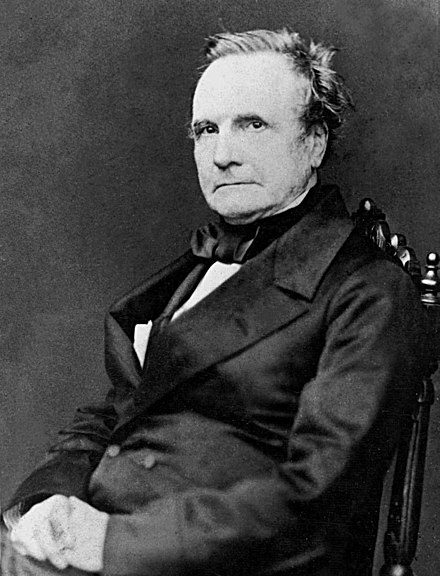

Innovators
An interesting mix of logicians, mathematicians, and those familiar with the Jacquard Loom.
George Boole

English logician who invented a logic based around 1's and 0's, we call it "Boolean logic" in his honor.
Charles Babbage
English polymath who built the plans for the difference engine and the analytical engine: machines that would allow for symbolic and generalized computation.
Ada Lovelace

English aristocrat who used her insight in seeing the pattern-based Jacquard Looms operate from a "plan" to build a similar "plan" for calculating Bernoulli numbers. Died lamentably young. Daughter of George Gordon, Lord Byron.
20th Century
Spurred by the World Wars and the Cold War, these individuals helped prepare our primitive cognitive apparatus to face the challenges of a world in which we swim in data.
Claude Shannon

Pioneer of information theory. Invented the term "bit" as abbreviation of "binary digit." Worked on numerous secret wartime activities. He loved jazz and played clarinet.
Alan Turing

What a legacy! Built a generalized machine to help break the Enigma cipher. Directly contributed to neutralizing the Nazi war machine in order to set the way for Allied victory. Later proposed generalized rules of all computers ("Turing Machines") and predicted the chief challenges in developing advanced artificial intelligence. After being pursued as a communist, was put on trial for his sexual identity, forced to take hormonal drugs as "chemical castration." This later drove him to suicide. Received posthumous apology from HRH Queen Elizabeth II. His life was cut short by three-quarters. What might he have given us with another half century to live?
Admiral Grace Hopper

Rear Admiral Hopper was a mathematician who was a programmer on one of the earliest computers at Harvard. Later she went on to help devise UNIVAC I, the first commercial computer. She also helped build COBOL, an early, English-like programming language that set the stage for languages like Python, Ruby, etc. She was also a formidable communicator of science and technology: she could find a way to communicate technological challenges in both mathematics as well as to laypeople, or military brass!
Recent
While the 20th century saw us gain the ability to brute force process data into information, these individuals are leading the way to making working with the computer signify something within in the human mind.
Alan Kay

At heart, a biologist, Kay realized that the biological metaphor of "small units of intelligence, working together" was a better model for programming. This is the foundation of "Object-Oriented" programming!
Rich Hickey

Challenging the chief notion of Object-Orientation, that the world is full of states and things, Hickey advocates for the functional mindset in which programs are flows of processes interacting.
Matsumoto Yukihiro

A beloved programmer and gentle soul. "Matz" created his programming language, Ruby, to be a language that was fun for the programmer. It was designed to help channel joy to programmers. In some way, it recalls Marie Kondo's KonMari method of household maintenance. Both hinge on a notion of "joy."